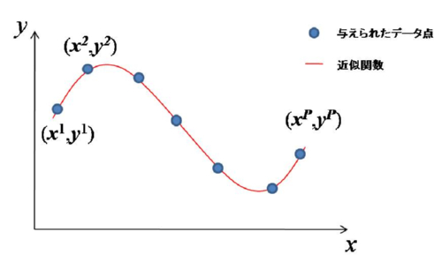
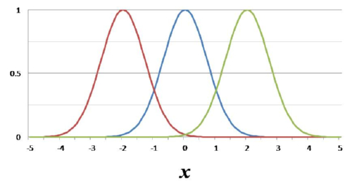
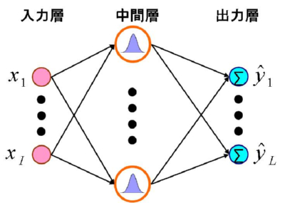
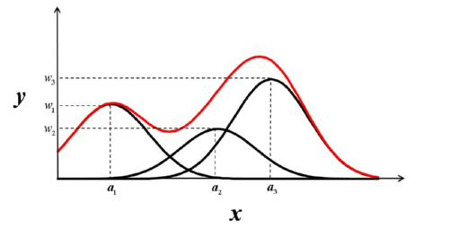

RBFネットワーク（Radial Basis Function Network）
RBFネットワークとは
RBFネットワークは有限個の入出力データを補完する方法として提案された，3層から構成されるニューラルネットワークです． 多層パーセプトロンと同じく任意の非線形関数の近似が可能です．|  |
| 関数近似の例 |
RBFネットワークの大きな特徴のひとつに，最小二乗法によって関数の最良近似法を導くことができる点が挙げられます．つまり，多層パーセプトロンなどでよく問題となるローカルミニマムの問題がありません．
これによってネットワークは安定した学習が可能になります．
RBF（Radial Basis Function)
日本語では放射基底関数と呼ばれています．RBFは関数の中心を表すパラメータを持っており，入力ベクトルと中心を表すパラメータとの距離によって値が決まります．
|  |
| ガウス関数 |
RBFにはさまざまなものがありますが，その中でも最もよく用いられるのがガウス関数です．
ネットワークの構造
RBFネットワークは多層パーセプトロンと同じように入力層，中間層，出力層の3層から構成されます．|  |
| ネットワークの構造 |
中間層の各ユニットが様々な中心値を持つRBFに相当し，出力層のユニットは中間層出力の加重和を出力します．
つまり，RBFネットワークは複数のRBFに重みを持たせて足し合わせることで任意の関数を表現します．
|  |
| RBFの足し合わせ |
ネットワークの学習
RBFの中心値と重みを調整することで，ネットワークに任意の出力を持たせることができます．与えられた学習データとネットワークの出力との誤差が小さくなるようにこれらのパラメータを学習させます．
学習法には勾配法を用いることもできますし，なんらかの方法でRBFの中心値をあらかじめ決定しておけば，重みを最小二乗法によって求めることができます．
Demo：関数近似シミュレーション
グラフエリアをクリックすると学習データをセットできます．学習データをセットしてからLearnボタンを押してください．
| RBFネットワークによる関数近似シミュレータ |